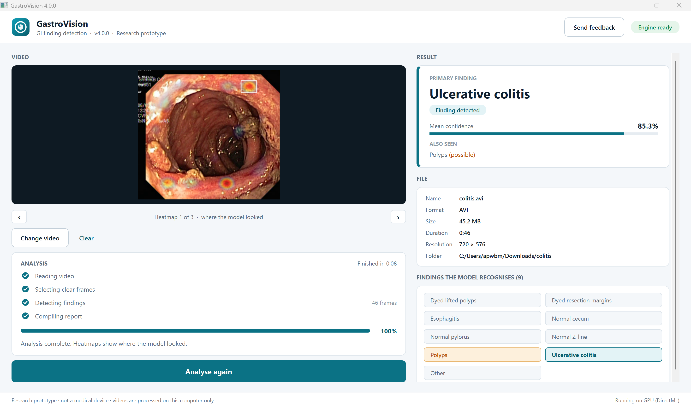

Scan an endoscopy video and see which frames the answer came from
GastroVision is a free Windows program for researchers. It takes one frame per second from a video, classifies each frame with an EfficientNetV2 model trained on HyperKvasir, and reports a finding only when it shows up in consecutive frames. The video never leaves your computer.
Download GastroVision 4.0.0 for Windows
Windows 10 or 11, 64-bit, about 250 MB. Other downloads on GitHub.
SHA-256: PASTE-HASH-HERE
Research prototype, not a medical device. It has not been validated for clinical use. Do not use it for diagnosis or treatment decisions. “No finding” does not mean a video is normal.

What happens when you press Analyse
- FFmpeg extracts one frame per second from the video.
- Frames that are too blurry, dark or otherwise unusable are discarded.
- The model scores every remaining frame. A frame counts toward a finding only above a confidence threshold. Polyps get a lower threshold (0.6) than the other classes, because a missed polyp is worse than a false alarm.
- Scores are smoothed over about three seconds, and a finding is kept only if it appears in at least two consecutive samples.
- You get the verdict, its mean confidence, weaker findings marked “possible”, and up to five heatmaps from the frames that supported the verdict most.
What it recognises
Eight findings from the HyperKvasir dataset (Borgli et al., 2020), plus a ninth class, Other, for frames that match none of them:
- Polyps
- Dyed lifted polyps
- Dyed resection margins
- Esophagitis
- Ulcerative colitis
- Normal Z-line
- Normal pylorus
- Normal cecum
Other is never reported as a finding, and frames the model puts there are ignored. It is one more trained class, not a general way of saying “I don’t know”: in testing, a frame the model called Other really was Other only 64% of the time. Anything outside the eight, such as other diseases or other parts of the gut, can be mislabelled as one of them, ignored as Other, or come back as no finding.
How well it works
Single-frame figures come from 4,060 test frames the model was not trained on. Video figures come from labelled HyperKvasir videos run through the whole program at one frame per second.
| What was measured | Result |
|---|---|
| Single frames, all nine classes | 84.4% |
| Polyp frames the model finds | 68% |
| Polyp calls that are correct | 89% |
| Whole videos with the right headline (46 labelled videos) | 45 of 46 |
| Extra false findings per video (same 46) | 0.17 |
| Polyp videos from a separate external set | 1 of 3 |
Polyps are the weakest class: about a third of polyp frames are missed. The 46-video result is a best case, because those videos come from the same dataset the model was built on. The model has not been tested on footage from other hospitals, scopes or recording setups, and the only outside check, three polyp videos, found one of them. Expect lower numbers on your own footage.
Your data
The analysis engine listens only on 127.0.0.1, so nothing is sent over the network. Extracted frames and heatmaps are written to %LOCALAPPDATA%\GastroVision\outputs and deleted after seven days.
The one thing that can leave your machine is feedback, and only if you send it. The Send feedback button copies the app version, your Windows version and the model’s test accuracy to the clipboard. It contains no video, no file names and no patient data. You paste it into the form yourself.
Installing
The installer is not code-signed, so Windows SmartScreen may warn you. Choose More info, then Run anyway. To check the download first, run this in PowerShell and compare the result with the hash above:
certutil -hashfile GastroVision-Setup-4.0.0.exe SHA256
Tell us what went wrong
Version 5 will be shaped by what people report. The most useful reports say what kind of video you used, what GastroVision answered, and what you expected instead. Please do not include anything that identifies a patient.